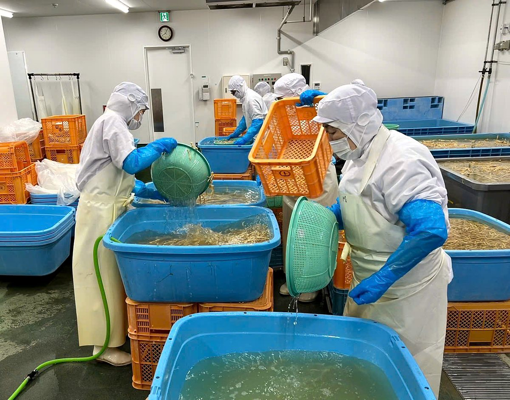
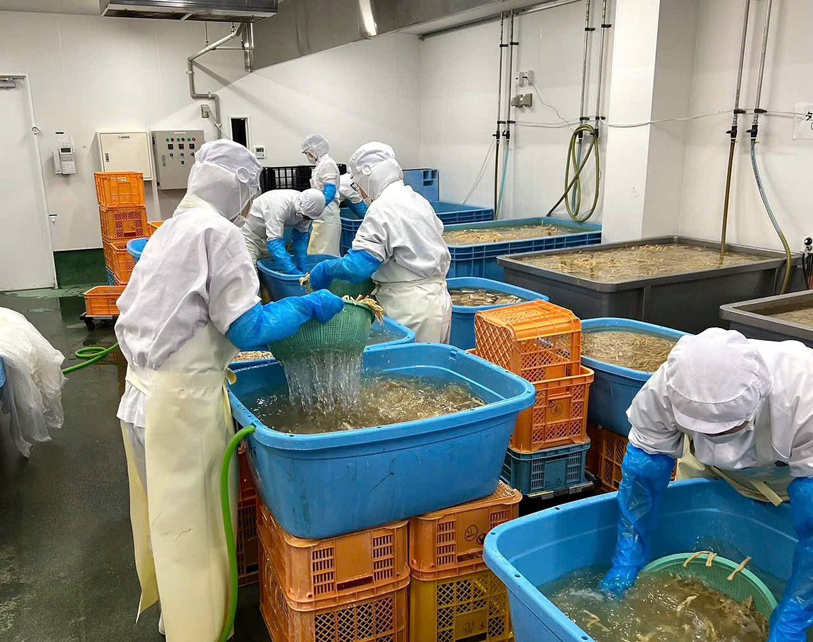
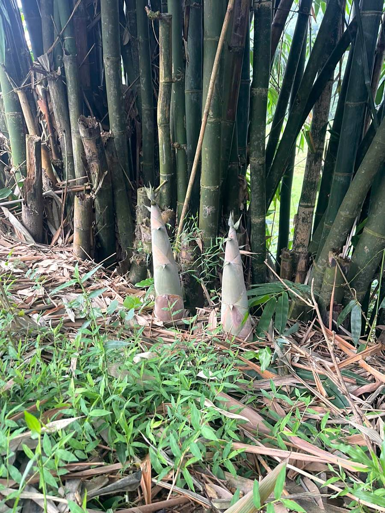
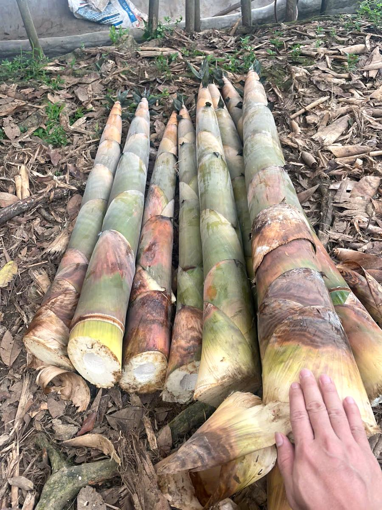
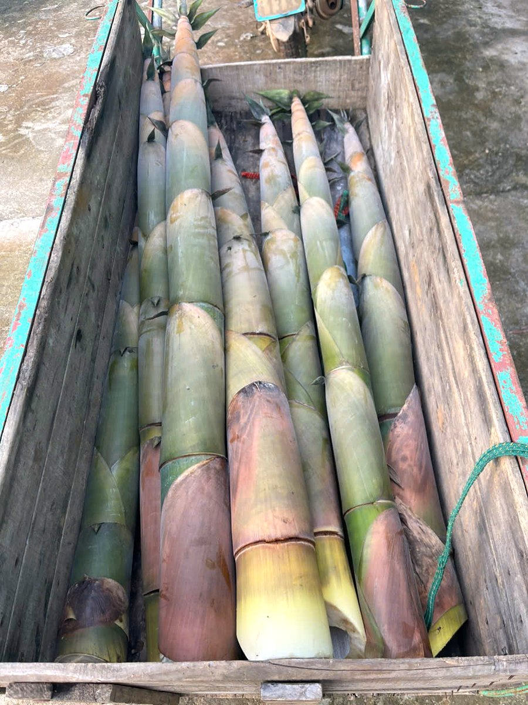
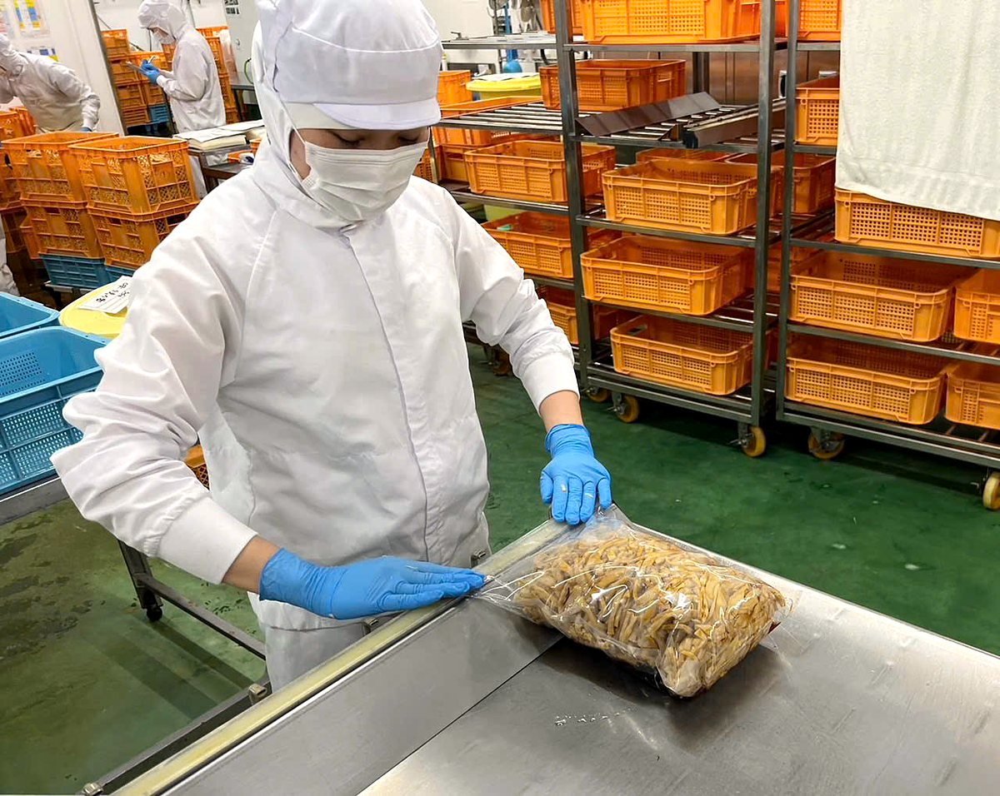

Xưởng măng của HTX Vũ Điền tại Đan Thượng
Vũ Điền Farm – thương hiệu của HTX Vũ Điền. Xưởng chế biến tại Khu 4, xã Đan Thượng, tỉnh Phú Thọ.
Vũ Điền Farm là thương hiệu của Hợp tác xã Liên minh Phát triển Nông nghiệp Xanh Vũ Điền (HTX Vũ Điền). Xưởng chế biến của chúng tôi đặt tại Khu 4, xã Đan Thượng, tỉnh Phú Thọ.
Ở xưởng, chúng tôi chỉ làm hai dòng sản phẩm: măng ủ muối – nguyên liệu mà quán ramen và bếp Nhật gọi là menma – và măng đóng túi cho bếp nhà hàng, bếp ăn và gia đình. Tập trung vào hai sản phẩm giúp chúng tôi làm đều tay, để mỗi lô măng đến bếp của khách giống nhau từ lần nhập này sang lần nhập khác.
Xưởng đang cung ứng cho khách hàng Nhật. Hiện chúng tôi mở rộng cung ứng cho nhà hàng, bếp ăn và nhà phân phối trong nước.

Từ măng nguyên liệu đến túi măng
Các bước tại xưởng Đan Thượng đang cập nhật
- Tiếp nhận măngMăng nguyên liệu được đưa về xưởng tại Khu 4, xã Đan Thượng.
- Phân loạiChọn và phân loại măng theo kích cỡ.
- Sơ chếBóc, rửa, cắt theo quy cách.
- Ủ muốiMăng được ủ muối trong bể/thùng tại xưởng.
- Chuẩn bị măng đóng túiVới măng đóng túi: măng ủ muối được xả muối và xử lý theo quy trình của xưởng.
- Cân – đóng túi – ghi lôCân theo khối lượng tịnh, hàn miệng túi, in ngày sản xuất, hạn sử dụng, số lô.
- Lưu kho thành phẩmThành phẩm xếp kho khô, nhiệt độ thường.




Hình ảnh xưởng & vùng nguyên liệu
Một số ảnh chụp tại xưởng và ở vùng nguyên liệu măng.








Hai sản phẩm, một nguồn măng
- Măng ủ muối – nguyên liệu menma, chưa tẩm vị
- Măng đóng túi – túi nhà hàng 3–5 kg; túi 300 g, 500 g Sắp có
- Hạn sử dụng 12 tháng, bảo quản ở nhiệt độ thường
- Kiểm nghiệm tại cơ quan thuộc Bộ Y tế
Ghé thăm xưởng
Khu 4, xã Đan Thượng, tỉnh Phú Thọ.
Vui lòng gọi hoặc nhắn tin trước khi ghé xưởng.